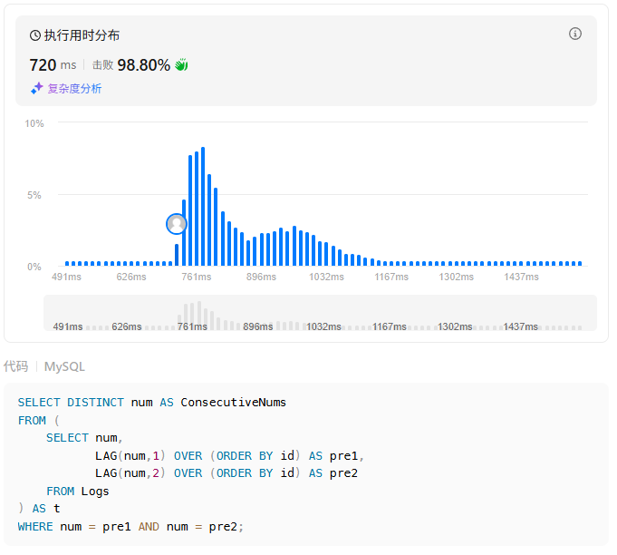
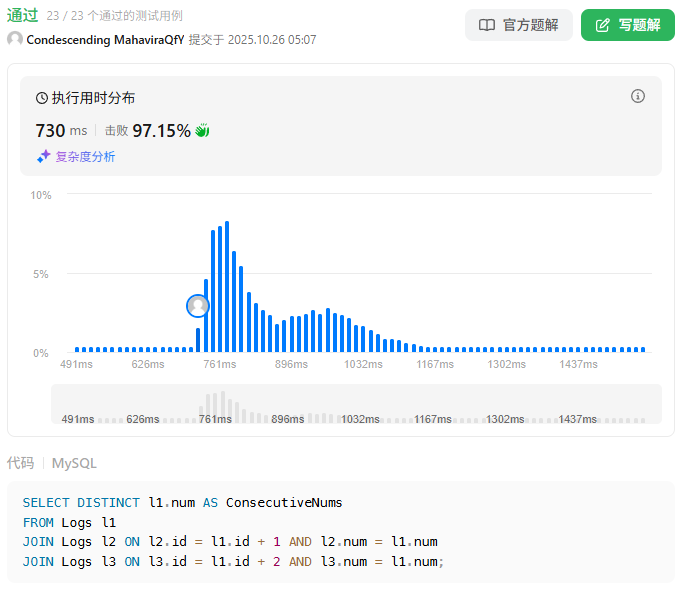

【LeetCode】力扣刷题记录-连续出现的数字
表：Logs
1 | +-------------+---------+ |
找出所有至少连续出现三次的数字。
返回的结果表中的数据可以按 任意顺序 排列。
结果格式如下面的例子所示：
示例 1:
1 | 输入： |
1 | SELECT DISTINCT num AS ConsecutiveNums |

1 | SELECT DISTINCT l1.num AS ConsecutiveNums |

本博客所有文章除特别声明外，均采用 CC BY-NC-SA 4.0 许可协议。转载请注明来源 末心的小博客！
相关推荐

2025-10-26
【LeetCode】力扣刷题记录-结合两个表
表: Person 123456789+-------------+---------+| 列名 | 类型 |+-------------+---------+| PersonId | int || FirstName | varchar || LastName | varchar |+-------------+---------+personId 是该表的主键（具有唯一值的列）。该表包含一些人的 ID 和他们的姓和名的信息。 表: Address 12345678910+-------------+---------+| 列名 | 类型 |+-------------+---------+| AddressId | int || PersonId | int || City | varchar || State | varchar |+-------------+---------+addressId 是该表的主键（具有唯一值的列）。该表的每一行都包含一个...

2025-10-26
【LeetCode】力扣刷题记录-第N高的薪水
表: Employee 12345678+-------------+------+| Column Name | Type |+-------------+------+| id | int || salary | int |+-------------+------+id 是该表的主键（列中的值互不相同）。该表的每一行都包含有关员工工资的信息。 编写一个解决方案查询 Employee 表中第 n 高的 不同 工资。如果少于 n 个不同工资，查询结果应该为 null 。 查询结果格式如下所示。 示例 1: 12345678910111213141516输入: Employee table:+----+--------+| id | salary |+----+--------+| 1 | 100 || 2 | 200 || 3 | 300 |+----+--------+n = 2输出: +------------------------+| getNthHighestSalary(2) |+---------------...

2025-10-26
【LeetCode】力扣刷题记录-第二高的薪水
Employee 表： 12345678+-------------+------+| Column Name | Type |+-------------+------+| id | int || salary | int |+-------------+------+id 是这个表的主键。表的每一行包含员工的工资信息。 查询并返回 Employee 表中第二高的 不同 薪水 。如果不存在第二高的薪水，查询应该返回 null(Pandas 则返回 None) 。 查询结果如下例所示。 示例 1： 123456789101112131415输入：Employee 表：+----+--------+| id | salary |+----+--------+| 1 | 100 || 2 | 200 || 3 | 300 |+----+--------+输出：+---------------------+| SecondHighestSalary |+---------------------+| 200 ...

2025-10-26
【LeetCode】力扣刷题记录-分数排名
表: Scores 12345678+-------------+---------+| Column Name | Type |+-------------+---------+| id | int || score | decimal |+-------------+---------+id 是该表的主键（有不同值的列）。该表的每一行都包含了一场比赛的分数。Score 是一个有两位小数点的浮点值。 编写一个解决方案来查询分数的排名。排名按以下规则计算: 分数应按从高到低排列。 如果两个分数相等，那么两个分数的排名应该相同。 在排名相同的分数后，排名数应该是下一个连续的整数。换句话说，排名之间不应该有空缺的数字。 按 score 降序返回结果表。 查询结果格式如下所示。 示例 1: 1234567891011121314151617181920212223输入: Scores 表:+----+-------+| id | score |+----+-------+| 1 | 3.50 || 2 | 3.65 || 3 |...

2025-10-26
【LeetCode】力扣刷题记录-两数之和
给定一个整数数组 nums 和一个整数目标值 target，请你在该数组中找出 和为目标值 target 的那 两个 整数，并返回它们的数组下标。 你可以假设每种输入只会对应一个答案，并且你不能使用两次相同的元素。 你可以按任意顺序返回答案。 示例 1： 输入： nums = [2,7,11,15], target = 9输出：[0,1]解释：因为 nums[0] + nums[1] == 9 ，返回 [0, 1] 。 示例 2： 输入： nums = [3,2,4], target = 6输出：[1,2] 示例 3： 输入： nums = [3,3], target = 6输出：[0,1] 提示： 2 <= nums.length <= 104 -109 <= nums[i] <= 109 -109 <= target <= 109 只会存在一个有效答案 这个题是经典的 Two Sum（两数之和），最优解法使用哈希表（字典）在一次遍历中解决，时间复杂度为 O(n)。 对于每个元素 num，计算出需要的另一个数 comple...

2025-10-26
【LeetCode】力扣刷题记录-两数相加
给你两个 非空 的链表，表示两个非负的整数。它们每位数字都是按照 逆序 的方式存储的，并且每个节点只能存储 一位 数字。 请你将两个数相加，并以相同形式返回一个表示和的链表。 你可以假设除了数字 0 之外，这两个数都不会以 0 开头。 123456789101112class Solution: def addTwoNumbers(self, l1, l2): head = cur = ListNode() carry = 0 while l1 or l2 or carry: carry += (l1.val if l1 else 0) + (l2.val if l2 else 0) cur.next = ListNode(carry % 10) cur = cur.next carry //= 10 l1 = l1.next if l1 else None l2 = l2.next if l2 els...